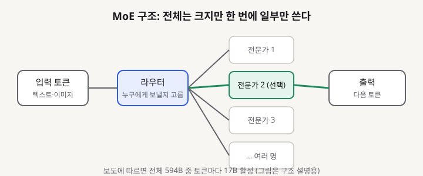
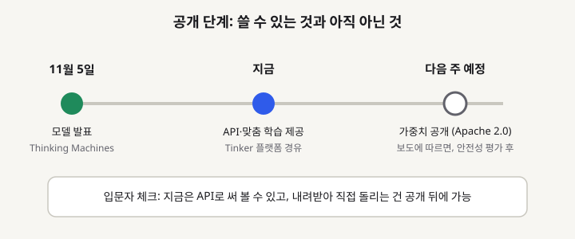

Inkling 2 Small: 594B 공개 모델, 입문 개발자가 알아야 할 것
- Thinking Machines Lab이 11월 5일 발표한 Inkling 2 Small이 개발자 커뮤니티에서 화제가 됐습니다. 보도에 따르면 전체 594B 파라미터 중 토큰마다 17B만 쓰는 MoE 구조입니다.
- MoE는 전문가 여러 명 중 일부만 골라 계산하는 방식이라, 덩치는 크지만 한 번 답할 때 드는 계산량은 작습니다. 입력으로 이미지도 받습니다.
- 가중치 공개는 발표 후 다음 주로 예고돼 있습니다. 지금은 API와 맞춤 학습 플랫폼으로 먼저 써 볼 수 있고, 내려받아 직접 돌리는 건 공개 뒤에 가능합니다.
요즘 오픈 모델 뉴스는 "얼마나 크냐"보다 "실제로 얼마나 싸고 빠르게 쓰느냐"로 옮겨 가고 있습니다. 이번 Inkling 2 Small은 그 흐름 한가운데에 있는 모델입니다. 규모는 큰데 한 번에 쓰는 양은 작다는 설계가 핵심이라, 입문 개발자가 모델 크기 숫자에 기죽지 않고 구조를 이해하기 좋은 예시이기도 합니다.
01한눈에 보기
도서관에 책이 아주 많지만, 질문 하나에 필요한 책은 몇 권뿐인 상황을 떠올려 보세요. 사서가 질문을 보고 "이 분야 담당자 두세 명만 부르자"라고 정하는 것과 같습니다. Inkling 2 Small이 쓰는 MoE(Mixture of Experts, 전문가 혼합) 구조가 이런 방식입니다. 보도에 따르면 전체 594B 파라미터 중 토큰마다 17B만 활성화됩니다.

활성 파라미터: 질문 하나를 처리할 때 실제로 계산에 참여하는 숫자의 양입니다.
가중치 공개: 학습된 숫자 묶음을 내려받아 자기 장비에서 돌릴 수 있게 여는 것입니다.
02어떻게 동작하나요
순서는 세 단계입니다. 먼저 입력 텍스트나 이미지가 토큰(모델이 읽는 작은 조각) 단위로 쪼개져 들어옵니다. 다음으로 라우터라는 작은 부품이 "이 토큰은 어느 전문가에게 보낼까"를 고릅니다. 마지막으로 고른 전문가들만 계산해서 결과를 합칩니다. 나머지 전문가는 이 순간 잠자고 있으니, 전체 크기에 비해 답변 한 번의 비용이 작아지는 이유입니다.

03왜 지금 화제인가요
보도 기준으로 이 모델은 11월 5일 발표됐고, 기사 게시는 11월 6일입니다. 한 매체에 따르면 Artificial Analysis 지수 31점, 기업용 코딩·업무 벤치마크 EnterpriseBench-CoreCraft에서 71.8%를 기록해 Claude 계열 최상위 모델 다음 순위에 올랐다고 합니다. 다만 이 점수들은 발표 측과 벤치마크 제공 측의 자료에 기대고 있어, 직접 재현하기 전에는 참고치로만 보는 편이 좋습니다.
이번 실행에서는 커뮤니티 반응 글을 직접 열어 보지 못했습니다. 검색 결과 제목만 보면 분석 글들이 규모 대비 성능을 주로 다루고 있었지만, 그 내용을 본문에 옮기기에는 근거가 부족해 생략합니다.
04관련 나라·기업
| 구분 | 이름 | 어떤 관련이 있나 |
|---|---|---|
| 기업 | Thinking Machines Lab | Inkling 2 Small을 발표한 개발사입니다. 모델 제공과 맞춤 학습 플랫폼 Tinker를 함께 운영합니다. |
| 나라 | 미국 | 개발사 본사가 있는 나라입니다. 미국 기업이 내놓는 오픈 웨이트 모델이라는 점이 기업 고객의 관심을 끌고 있습니다. |
05기존 방식과 무엇이 다른가
| 비교 항목 | 기존 밀집(Dense) 모델 | Inkling 2 Small (보도 기준) |
|---|---|---|
| 계산 방식 | 토큰마다 모든 파라미터 사용 | 토큰마다 일부 전문가만 사용 |
| 전체 규모 대 실제 사용량 | 거의 같음 | 전체 594B, 활성 17B |
| 입력 | 모델마다 다름 | 텍스트와 이미지 (음성 미지원) |
| 지금 쓰는 법 | 가중치 공개 모델은 바로 내려받기 가능 | API와 맞춤 학습 플랫폼으로 먼저 제공, 가중치는 다음 주 예정 |
06직접 해 보기
지금 할 수 있는 일은 두 가지입니다. 첫째, 공식 발표문에서 모델 이름과 제공 방식(API 또는 플랫폼)을 확인합니다. 둘째, 같은 질문을 두세 개의 모델에 던져 답변 길이와 속도를 비교해 봅니다. 발표 측 공식 문서는 이번 실행 중 열리지 않아 구체적인 호출 코드는 확인하지 못했습니다. 그래서 여기에는 코드를 싣지 않습니다. 가중치 공개 뒤에는 공식 저장소의 설치 안내를 따라 로컬에서 실행해 보는 것을 권합니다.
07주의할 점과 한계
- 공식 발표 페이지를 확인하지 못했습니다. 본문의 수치(594B, 17B, 벤치마크 점수)는 여러 매체와 분석 글에 따른 내용이며, 공식 자료로 다시 검증하지 않았습니다.
- 가중치 공개 일정은 "다음 주"로 예고됐지만, 안전성 평가가 끝나야 확정됩니다. 일정이 바뀔 수 있습니다.
- 벤치마크 점수는 측정 조건에 따라 달라집니다. 한 개의 점수만 보고 "더 낫다"고 결론 내리지 않는 것이 좋습니다.
08정리
Inkling 2 Small이 주목받는 이유는 큰 모델을 작게 쓰는 설계와, 그 설계를 실제 제품 단계로 이어 가려는 공개 방식 때문입니다. 입문 개발자 입장에서는 "모델이 크다"는 말이 곧 "내 장비에서 못 쓴다"는 뜻이 아니라는 점을 배우기 좋은 사례입니다.
다만 지금은 공식 자료로 수치를 확인하기 전이므로, 발표 페이지와 가중치 공개 소식을 한 번 더 확인한 뒤 직접 써 보기를 권합니다.
09참고한 글
- Thinking Machines launches Inkling 2 Small with near-frontier performance on enterprise benchmarks VentureBeat · 2026.11.06